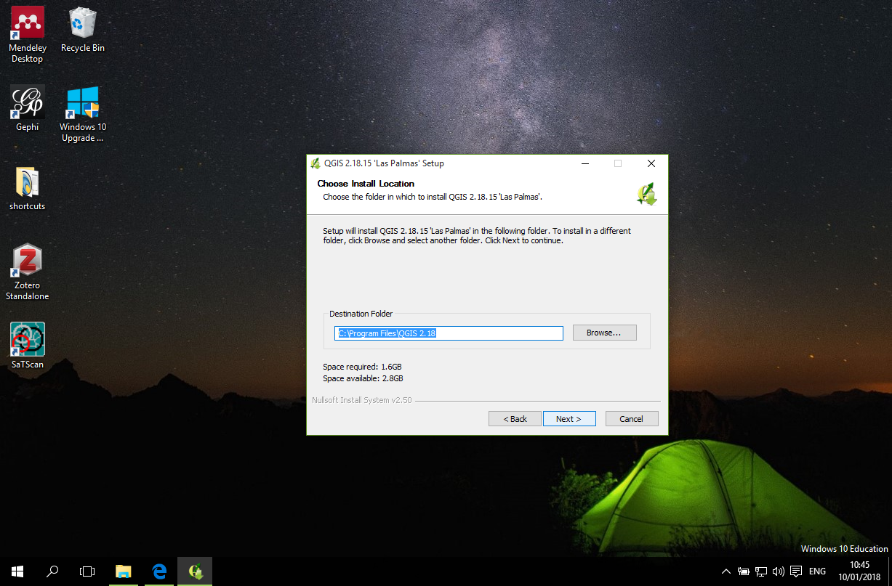

下載與安裝
建構這網站的時候 QGIS 最新版是到 2.18.15 ，因此以下及網站其他章節也將用這個版本進行說明。以下安裝將以 Windows 環境作說明。其他包括 Mac/Linux 環境暫時不作討論。
下載
要下載 QGIS 可以直接到 Google 進行搜尋 QGIS：

然後找到 QGIS官方網頁：
這是 QGIS 網站首頁，點選下載(Download Now 按鈕)：
一般來說，Windows 會詢問你是否要執行這個安裝檔，點是(Yes)：
閱讀軟體使用協定後，點「我同意」(I Agree) 進入下一步：
選取安裝路徑，範例這電腦中我將使用預設路徑，點下一步(Next)：

QGIS 安裝檔有提供一些試用檔案，本範例將不需要這些資料檔案，所以都不勾選，然後點安裝(Install)：
安裝完成後，桌面出現一個資料夾，裡面有 QGIS 軟體的各種捷徑：
其中將常用到的是 QGIS Desktop 2.18.15。
其他的有 QGIS Browser 是提供快速查看空間資料檔的檔案管理器、OSGeo4W Shell 是提供透過程式直接進行資料處理的環境、SAGA GIS 是對raster 資料進行分析的工具 等。本網站將不會涵蓋這些工具。